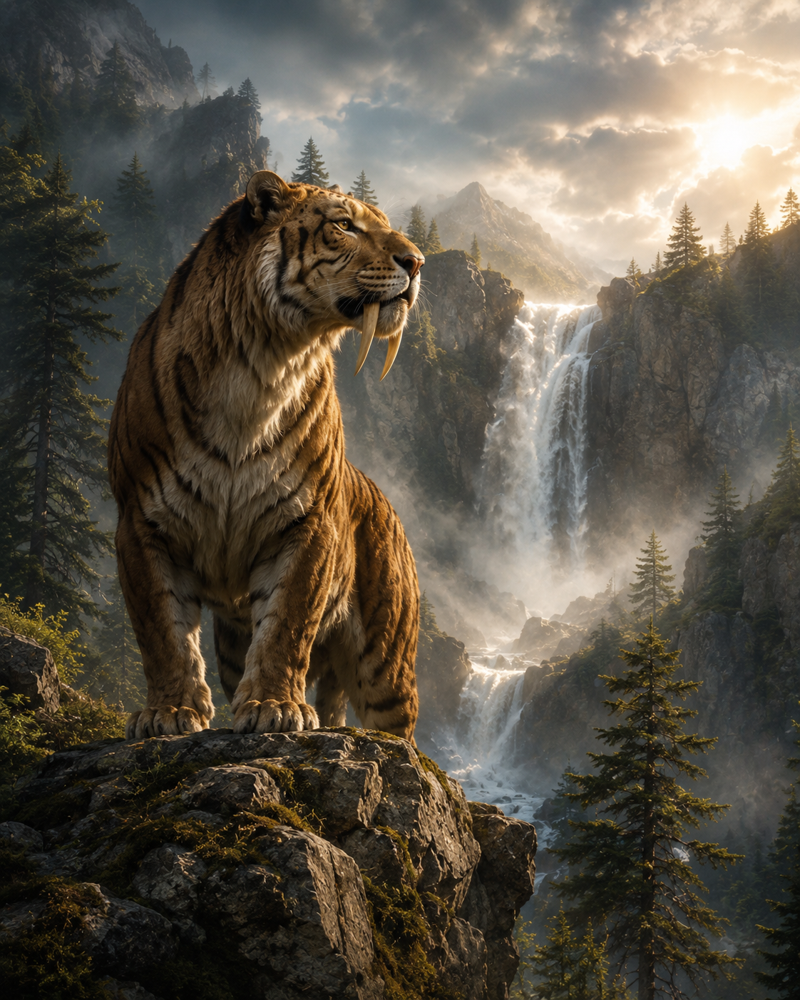
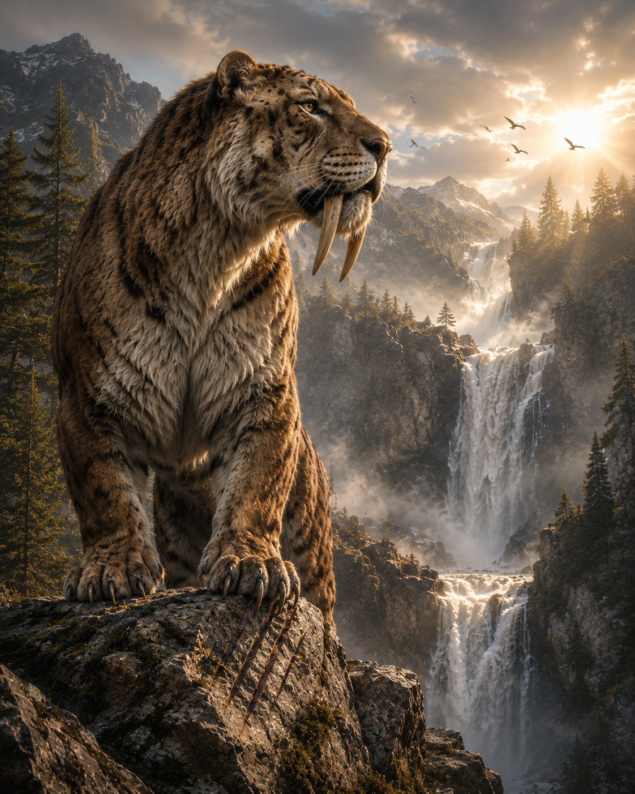
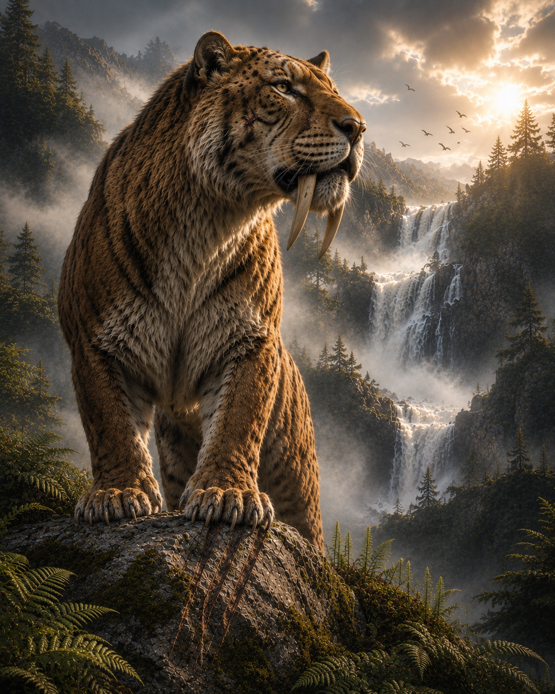
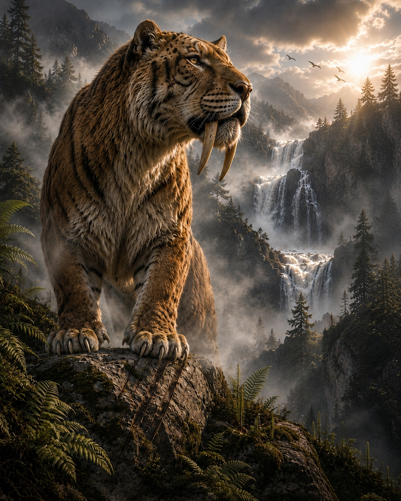

Mon univers
Bienvenue dans mon univers.
Chaque création est une invitation à voyager à travers des mondes où la lumière raconte autant que les personnages, où les couleurs façonnent une atmosphère et où chaque image possède sa propre histoire.
Ma façon de créer
L'intelligence artificielle est mon outil de création, mais jamais une finalité. Derrière chaque œuvre se cachent des heures de réflexion, d'expérimentation et d'ajustements. Avant même la première génération, j'imagine une ambiance, un décor, une identité, une émotion... tout un univers que je cherche à réunir dans une seule création.
J'aime donner vie à des mondes où chaque détail trouve naturellement sa place. La lumière, les couleurs, les personnages, les décors et la narration ne sont jamais pensés séparément : ils se répondent pour former un ensemble cohérent, capable de transmettre une émotion et de raconter une histoire.
De l'idée à la création
Au fil de cette page, je vous invite à découvrir non seulement les créations terminées, mais aussi le chemin qui les a fait naître. Car derrière chaque image se cache un véritable processus de création, fait d'essais, de remises en question et d'ajustements successifs, jusqu'à ce que chaque élément trouve enfin sa juste place.

Première idée
Le concept est posé, mais le tigre ressemble encore trop à un félin actuel. Cette première version me sert de point de départ pour construire progressivement l'image que j'ai en tête.

Premiers ajustements
Je retravaille sa morphologie pour retrouver la puissance que j'imagine chez un véritable tigre à dents de sabre. Je l'avance également dans la scène et commence à enrichir son environnement avec les premières griffures sur la roche.

L'image prend forme
En corrigeant certains défauts anatomiques (il manquait une oreille), je continue aussi à faire évoluer le décor. La cascade change, la végétation s'étoffe et l'ensemble gagne en profondeur pour renforcer l'ambiance de la scène.

Version finale
Les derniers ajustements portent sur les détails anatomiques (mon tigre a retrouvé son oreille manquante mais il se retrouve à présent avec 5 doigts sur une de ses pattes), tandis que la brume, les oiseaux et les derniers éléments du décor viennent compléter l'atmosphère jusqu'à obtenir une image fidèle à celle que j'avais imaginée.
Si certaines de ces créations vous invitent à rêver, à imaginer ou simplement à vous arrêter quelques instants, alors elles auront pleinement atteint leur but.